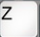
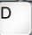
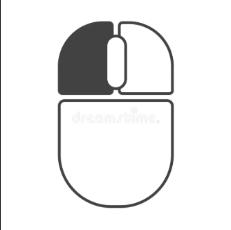
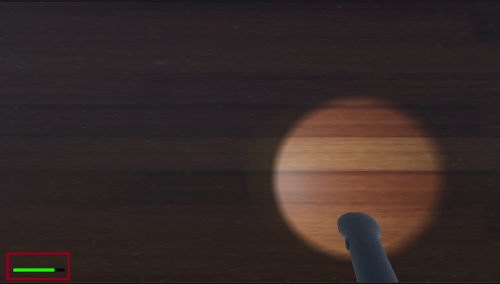
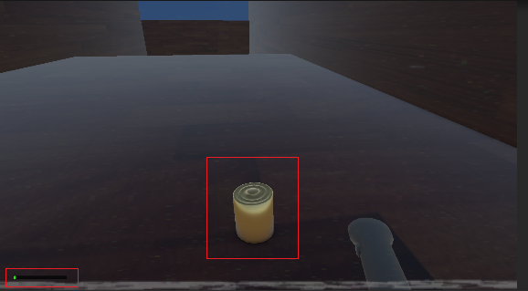

Guide du jeu
Touches pour se déplacer (Jonas/Jotunn)

Avancer
Aller à gauche
Reculer

Aller à droite

Allumer/Eteindre la lampe torche (jonas)
Gameplay Jonas
Touche sur laquelle le joueur doit appuyer si il est attrapé afin de déclencher le QTE (objets requis : Knife ou Scissors)
Touche sur laquelle le joueur doit appuyer afin de déclencher un QTE qu'il doit réussir pour pouvoir gagner (objets requis : Bullet et Gun)
Guide lampe torche

Cette barre de progression represente la batterie restante dans la lampe.

Si jamais la batterie venait à se vider, le joueur doit alors chercher dans la map afin de trouver des piles. Toutefois, il y a peu de piles disponibles, le joueur doit donc bien surveiller la batterie afin de ne pas se retrouver dans le noir.
But du jeu :
Personnage : Jonas
- Ne vous faite pas attraper par le Jotunn
- Trouver l'objet "Bullet" ainsi que l'objet "Gun" puis maintenir la touche "J" tout en étant immobile afin de gagner
Personnage : Jotunn
- Attraper Jonas
- Empêcher Jonas de trouver l'objet "Bullet" ainsi que l'objet "Gun"